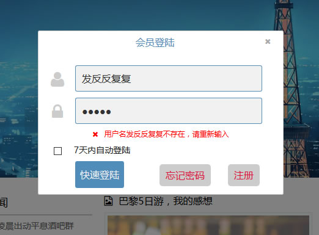

项目已经上传到了github，地址为：https://github.com/king2088/JavaMiniBarCMS
请注意，有任何问题请留言，有改进的意见请留言，有能力修改代码和完善功能的请直接Email联系博主，联系email请查看About me页面
小型酒吧在线管理系统MinibarCMS是使用Java MVC模式 + Mysql数据库开发的一个简单的文章管理系统，代码简单，数据库也非常mini，特别适合初学者研究与学习！
2010年V1版本
V1版本已经基本完善了全部功能，但是并未实现ajax，前端DIV+CSS，仅仅只是为了实现功能而开发的一个java MVC + Mysql的一个简单的文章管理系统。
目前本站不提供V1版本的下载，如需V1版的童鞋，请自己百度搜索“小型酒吧在线管理系统”，首页预览图如下：
2016年V2版本
V2版本中对前端进行了重构，一个全新的平面化设计的前端，更新内容如下：
1、增加14个Sevelet来处理相关数据，减少了多余的JSP页面
2、FCKediter更改为ueditor
3、前端使用JQ+JQ UI的方式重新布局和实现相关功能
4、登陆增加了Ajax查询用户名是否正确
5、注册页面增加了Ajax查询用户名是否存在，验证码同样使用了Ajax的方式直接在注册页面进行验证，无需跳转后再验证，提高了用户体验度
6、所有表单提交都增加了实时验证功能
7、所有页面都进行了权限设置，游客无法访问被限制的页面
8、后台登陆，进行了严格的权限分配，不是管理员的用户无法登陆，在V1.0版本中，任意用户可以随意登陆后台
9、增加了Json数据，可以通过Jsonp的方式调用和读取相关Json数据
10、优化了SEO功能
11、减小了整个网站的体积
12、增加了FontAwesome字体图标
13、优化了Javamail无法发送邮件及发送失败的问题
14、增加7天自动登陆功能，使用cookie的形式实现7天内自动登录
15、增加了DB.properties，配置Mysql数据库链接地址、用户名、密码，更加人性化，链接数据库只需修改DB.properties中的相关信息即可，无需修改源码。
新增功能图片预览：

使用注意事项
1、在使用本系统前，如果你对Mysql了解不多，或者没有Mysql数据库基础，个人建议自行搭建JavaWeb环境，安装Java JDK，Tomcat，Mysql这三款软件，安装好了以后将下载的V2版系统放到Tomcat目录下的webapps/ROOT文件夹下，你也可以自己设置虚拟目录（不会的童鞋请自己百度），直接输入xxxxx/bar/install.jsp文件即可进行安装（install.jsp也必须是自己安装的Mysql才可以使用，在CMD中输入mysql，必须可用）。（此步必须是自己搭建的服务器软件）
如果是使用xampp等集成服务器软件，建议自己创建数据库并进行.sql文件导入即可。
2、网站配置
打开网站目录下的WEB-INF目录，找到DB.properties文件，即可看到如下信息：
1 | #配置文件 |
2 | #mysql URL:jdbc:mysql://数据库IP:端口/数据库名称，不能带有“?/*&”等字符 |
3 | Mysql_url=jdbc:mysql://localhost:3306/bar |
4 | #mysql用户名 |
5 | Mysql_root=root |
6 | #mysql密码 |
7 | Mysql_password=123456 |
8 | #mysql的bin路径，为了能够正常备份恢复Mysql数据库，请正确填写Mysql的Bin目录（备份恢复Mysql数据库仅为本地测试而设计） |
9 | #如果Mysql是完整安装在计算机上的就不必设置此项，如果是使用集成环境的比如XAMPP则需要设置 |
10 | #Mysql_Binpath=G:XAMPPmysqlbin |
11 | Mysql_Binpath= |
必须注意的是jdbc:mysql://localhost:3306/bar中，localhost是mysql的服务器ip地址，bar就是数据库名称。Mysql_Binpath是mysql的bin目录，如果是自行搭建的javaweb服务器，即可不用填写，如果是使用集成服务器软件，请自行填写mysql的bin目录，以便网站后台能够备份恢复数据！